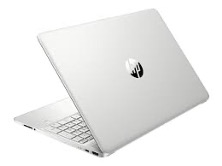
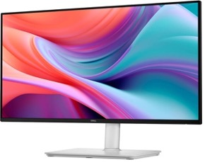
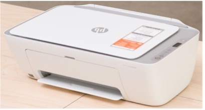
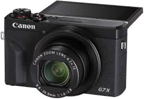

BIS 23
My Work Station Budget
A breakdown of the equipment and tools used for school, work, and creative projects — including cost, specs, and purpose for each item.
| Item | Description | Cost | Why? |
|---|---|---|---|
MacBook Air |
Model: MacBook Air 13-inch Chip: Apple M3 RAM: 8 GB Storage: 256 GB SSD Display: 13.6" Retina (2560×1664) OS: macOS Sequoia |
$1,400 | I use a MacBook because it is lightweight and easy to carry to class and different locations. It has been very useful for my school assignments, and it allows me to easily transfer information from my iPhone to my Mac, which helps me stay organized and work more efficiently. |
| HP Laptop  |
Model: HP 15-dy5023st CPU: Intel Core i3 (12th Gen) RAM: 8 GB Storage: 256 GB SSD Display: 15.6" Full HD OS: Windows 11 |
$350 | I purchased this HP laptop to install keyboard-related software and to use Windows-based programs required for my DAT classes, such as Microcomputer Applications and Excel. It allows me to work with programs that are not always compatible with macOS. |
Adobe Creative Cloud |
Apps: Dreamweaver, Photoshop, Illustrator, etc. Platform: macOS and Windows Use: Web design, graphic design, creative projects |
$0.00 (Free with school access) |
Thanks to my school, I am able to use Adobe Creative Cloud for free. I started using it for my BIS 13 class, specifically for Dreamweaver. Adobe offers many tools that are useful for web design, editing, and creative projects, which makes it helpful for both schoolwork and future professional use. |
| Dell 24 Plus Monitor  |
Size: 23.8" Resolution: Full HD (1920×1080) Refresh Rate: 144 Hz Panel: IPS Connection: HDMI Features: Anti-glare, eye comfort |
$129.99 | Provides more screen space for working efficiently. Especially useful for Excel, research, and completing school assignments while keeping multiple windows open simultaneously. Little update: I just got my first external monitor! it's a Samsung 24" (S30GD). I don't know how I managed without one until now. |
| HP DeskJet 2755e Printer  |
Type: Inkjet Functions: Print, Scan, Copy Connectivity: Wireless |
$60 | This printer is useful for printing school assignments, documents, and forms at home. It also allows me to scan and copy documents when needed, which is helpful for school and personal use. |
Seagate External Hard Drive |
Brand: Seagate Backup Plus Storage: 5 TB Type: External HDD Connection: USB 3.0 Compatibility: Mac & PC |
$119 | This external hard drive provides a large amount of storage for backing up important files and school projects. It helps keep my data safe and allows me to store documents, assignments, and backups outside of my main computer. |
| Canon G7X Camera  |
Lens: 4.2x optical zoom (24–100mm) Aperture: f/1.8–2.8 Screen: 3.0" touchscreen Connectivity: Wi-Fi & Bluetooth Charging: USB |
$1,500 | I chose this camera for my travels because it allows me to capture high-quality photos and videos. It is useful for documenting trips, creating content, and preserving memories, while also being easy to transfer files to my computer for storage and editing. |